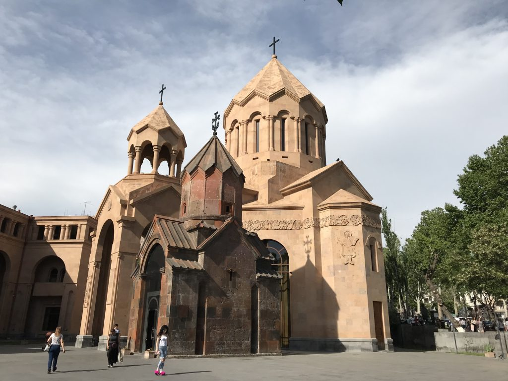
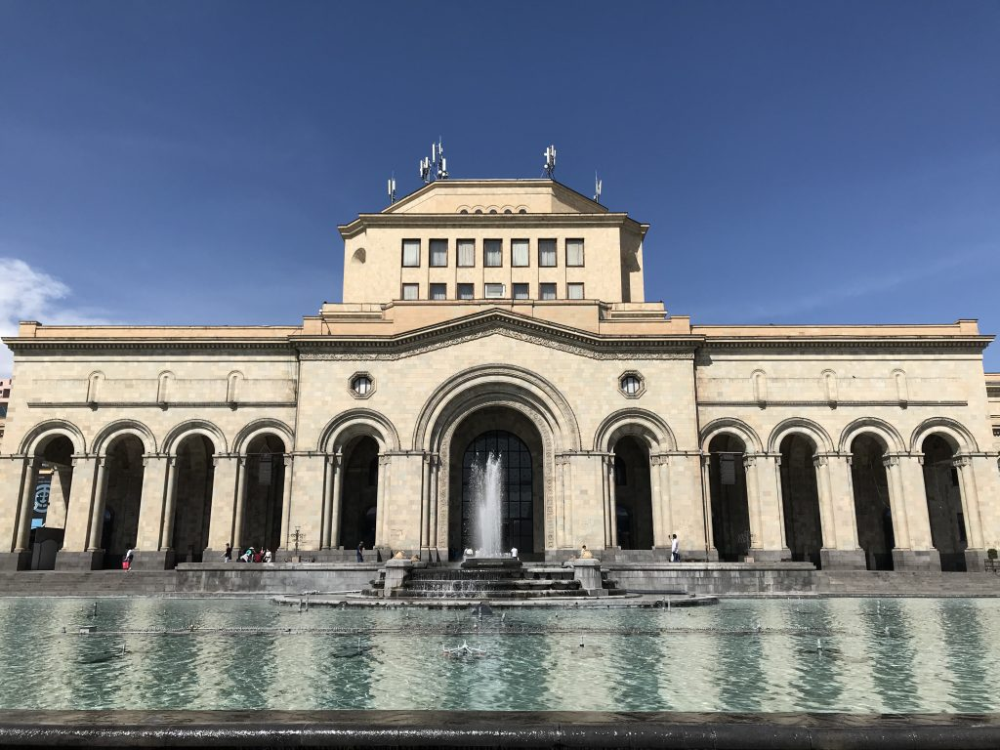
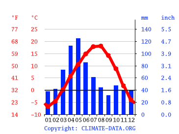
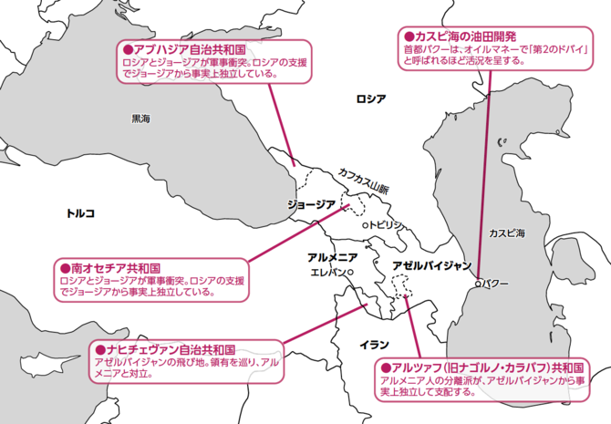
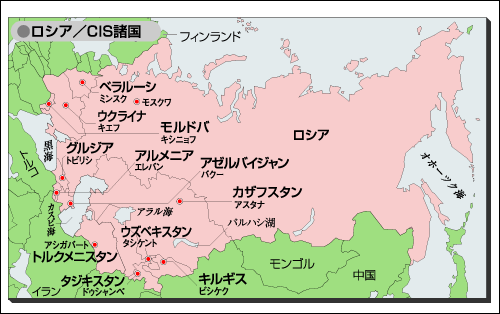
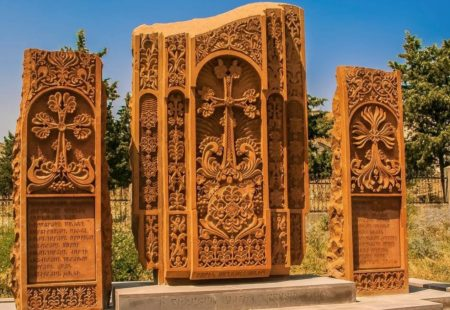
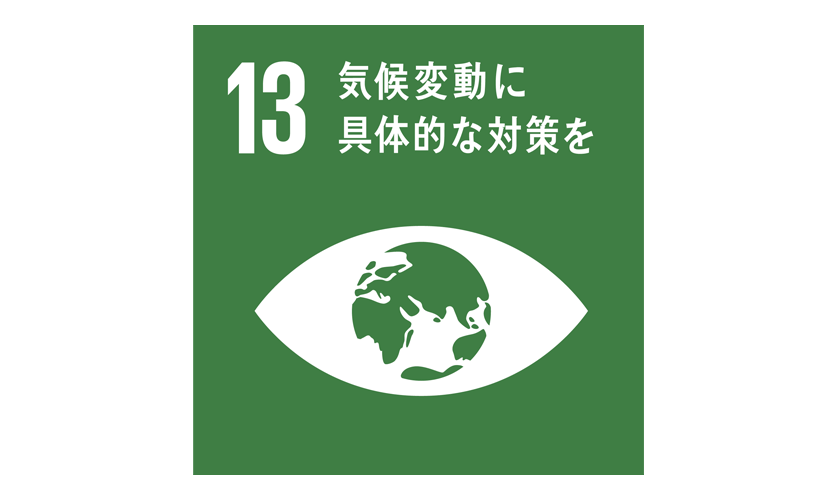

アルメニアはカフカス山脈の南側に位置し、北はジョージア、東はアゼルバイジャン、南はイラン、西はトルコと国境を接する内陸国です。山岳地帯が多く気候は乾燥していますが、国土の約4割が牧場や牧草地、約2割が耕地や果樹園として利用されている内陸国です。

首都エレヴァンは「世界最古の都市」の一つと言われており、自然豊かで世界遺産もあります。
 また、大陸性気候で夏は40度、冬はマイナス15度近くになることもあります。年間を通して雨は少なく乾燥しています（特に夏）。気温は日本の同季節よりやや低めであるといえます。冬頃（11～3月）は積雪が多くかなり冷え込みます。
最新の統計によると、アルメニアでは約100年の間に平均気温が1.2℃上昇し、極端な気象現象が20％増加したとされています。 複雑な山岳地帯と脆弱な農業地域を持つ内陸国のアルメニアで、気候変動はコミュニティと人々の暮らしに深刻な脅威を与えています。
ゲガルクニク県は、春先の霜、雹、風、干ばつ、土砂崩れなど、アルメニアで最も気候によるリスクや危険にさらされている地域の一つです。
アルメニア人の多いナゴルノ・カラバフ自治州や、アルメニア領に囲まれたアゼルバイジャンの飛地（ナヒチェヴァン自治共和国）の領有問題で、アゼルバイジャンとの対立は深く、また20世紀初頭にオスマン帝国においてアルメニア人が迫害された歴史を背景にトルコとも対立関係にあります。
16世紀以降オスマン帝国とペルシャによる争奪の対象となり、19世紀にはロシアも加わって大国の支配を受けましたが、20世紀になって独立し、後に旧ソ連の構成国となりました。
周辺国と同様に、旧ソ連から1991年に独立し、同年CISにも加盟しました。ロシア寄りの外交方針をとっていますが、経済面では欧米、中東、アジア各国との関係も重視しています。
アルメニアの文化や伝統を理解する上で忘れてはならないのが、アルメニアの伝統的な服装です「taraz（タラズ）」。
非常にカラフルな装飾がほどこされ、女性の頭には薄いベールがつながる帽子を、男性の頭にはターバンに似た帽子をかぶります。
また、ヨーロッパとアジアのちょうど中間あたりに位置しており、その影響もあって様々な国や人種、文化の影響を受けている。
そのため、何がアルメニアの文化を表現しているのかわからなくなってしまうこともあります。「アルメニア産」の文化的代表物ともいえるものが「Khachcar（ハチカール）」。これはすなわち十字架の石を意味する。
日本政府の協力の下、国連開発計画（UNDP）がアルメニアで実施しているプロジェクト「気候リスク・レジリエンスに関して国が決定する貢献（NDC）への支援」では、チャンバラク地域において、コミュニティによる流路の清掃と川岸を保護する壁の建設が行われました。

このプロジェクトの成果は、気候変動への適応策とレジリエンスへの投資が多面的な効果をもたらすことを示しています。